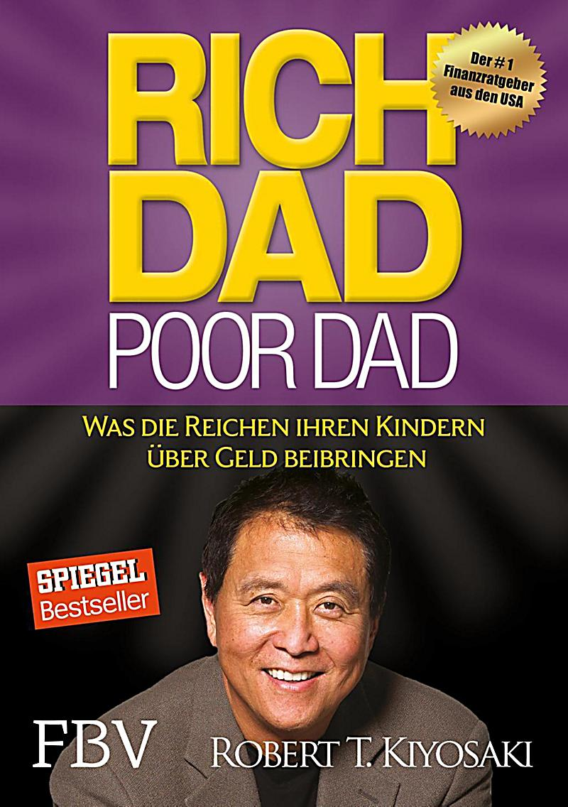
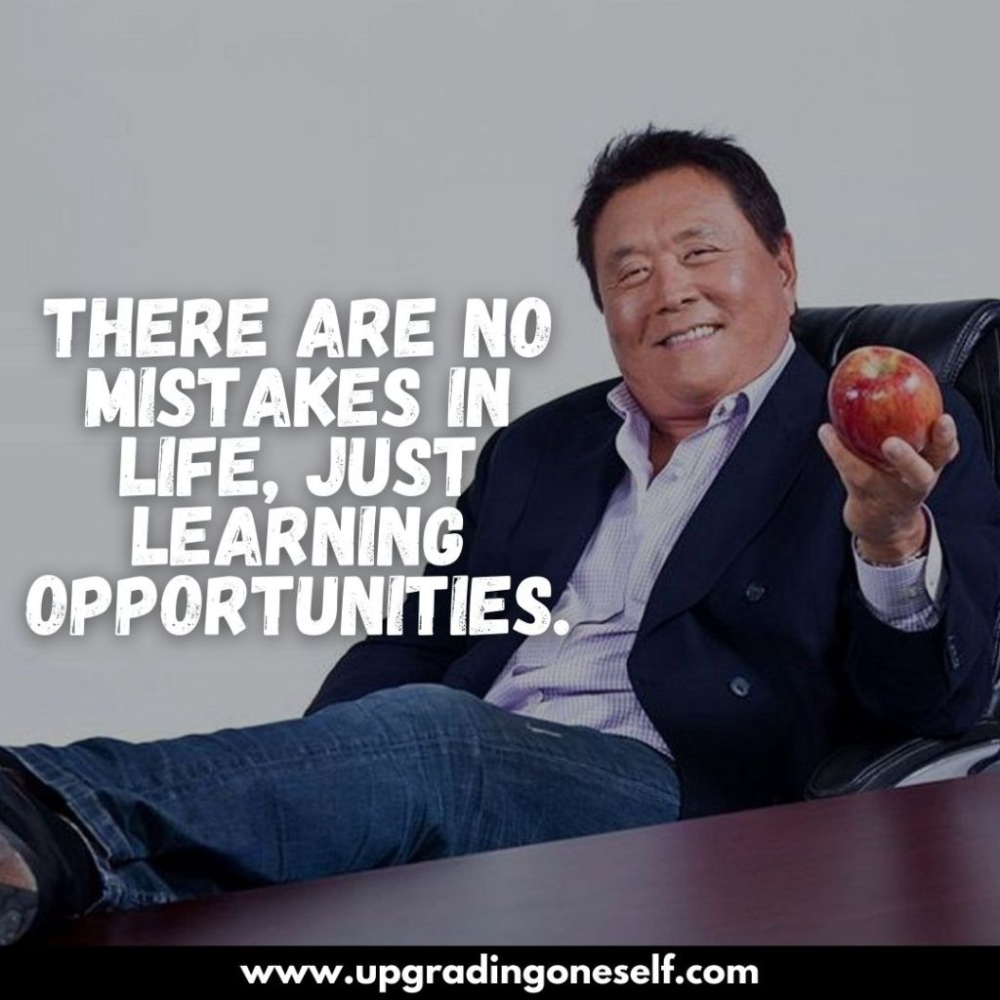

I had two fathers, a rich one and a poor one. One was highly educated and intelligent; he had a Ph.D. and completed
four years of undergraduate work in less than two years. He then went on to Stanford University, the University of Chicago,
and Northwestern University to do his advanced studies, all on full financial scholarships. The other father never finished
the eighth grade.
Both men were successful in their careers, working hard all their lives. Both earned substantial incomes. Yet one struggled
financially all his life. The other would become one of the richest men in Hawaii. One died leaving tens of millions of
dollars to his family, charities and his church. The other left bills to be paid.
}
Both men were strong, charismatic and influential. Both men offered me advice, but they did not advise the same things.
Both men believed strongly in education but did not recommend the same course of study.If I had had only one dad, I would have
had to accept or reject his advice. Having two dads advising me offered me the choice of contrasting points of view; one of a rich
man and one of a poor man.

Instead of simply accepting or rejecting one or the other, I found myself thinking more, comparing and then choosing for myself.
The problem was, the rich man was not rich yet and the poor man not yet poor. Both were just starting out on their careers, and both were
struggling with money and families. But they had very different points of view about the subject of money. For example, one dad would say,
"The love of money is the root of all evil." The other, "The lack of money is the root of all evil."
As a young boy, having two strong fathers both influencing me was difficult. I wanted to be a good son and listen, but the two fathers did
not say the same things. The contrast in their points of view, particularly where money was concerned, was so extreme that I grew curious
and intrigued. I began to start thinking for long periods of time about what each was saying
Much of my private time was spent reflecting, asking myself questions such as, "Why does he say that?" and then asking the same question of the other
dad's statement. It would have been much easier to simply say, "Yeah, he's right. I agree with that." Or to simply reject the point of view by saying,
"The old man doesn't know what he's talking about." Instead, having two dads whom I loved forced me to think and ultimately choose a way of thinking for myself.
As a process, choosing for myself turned out to be much more valuable in the long run, rather than simply accepting or rejecting a single point of view.
One of the reasons the rich get richer, the poor get poorer, and the middle class struggles in debt is because the subject of money is taught at home, not in school.
Most of us learn about money from our parents. So what can a poor parent tell their child about money? They simply say "Stay in school and study hard." The child may
graduate with excellent grades but with a poor person's financial programming and mind-set. It was learned while the child was young.
table, th, td {
border: 1px solid black;
|
Language
|
English
|
|
Genre
|
advice
|
|
Publisher
|
Robert Kiyosaki · Sharon Lechter
|
|
Publication date
|
Apr 01, 2000
|
|
Pages
|
223 pages
|
Find more information about the Rich Dad Poor Dad
Download the Source